1
[Nombre del instrumento]
Tiempo estimado: xx minutos
SISTEMA VISUAL
Paleta y tipografía tomadas de la presentación institucional de AdaptaInfra. Lo que aparece abajo es lo que usa la landing. El estado de cursor (hover) del botón se indica como pendiente de implementar.
El verde profundo manda: bandas, títulos y botones. El lima se reserva para elementos grandes: los números de «Antes de empezar», los bordes de acento y la volanta sobre verde profundo.
Verde profundo
#034915 · bandas, titulares, botón primario
Verde medio
#0A5F2A · enlaces, hover, acentos
Verde señal
#00833D · mosaico, opción de acento
Lima
#72BF00 · números, volanta, bordes de acento
Menta
#A6D39F · texto sobre fondo verde
Verde pálido
#C7E895 · mosaico
Verde humo
#EDF4E7 · chips, bandas suaves
Marfil
#F8F8F8 · fondo alterno de sección
Poppins para todo lo que titula; Inter para todo lo que se lee de corrido. Dos familias, sin excepciones.
Primario: altura mínima 48 px. Secundario: 44 px, borde de 1,5 px e ícono de enlace externo. Radio de 8 px y etiqueta en Poppins 600 en ambos. Un solo botón primario por tarjeta.
Abrir el formulario
Al pasar el cursor · a implementar
Secundario · se abre en pestaña nueva
Una sola etiqueta acompaña a cada instrumento: el tiempo estimado.
Cuadro numerado de 58 px, título, etiqueta de tiempo y botón al extremo derecho. Las cuatro tarjetas son idénticas: ninguna queda en espera. En pantalla angosta el botón baja a la línea siguiente.
Franja blanca al comienzo de la página, antes del encabezado verde. La imagen va centrada, con un ancho máximo de 720 px y 20 px de margen vertical. En pantalla angosta ocupa todo el ancho disponible.
Número en Poppins 700 de 40 px con el color de acento, título de 17 px y texto de 15 px. Los pasos se reparten en una grilla de hasta cuatro columnas, de al menos 220 px cada una y 32 px de separación. El primero lleva un botón secundario.
01
Cada pregunta lleva un código, por ejemplo CUM-P1-07, que es el mismo en el archivo y en el formulario.
Acceso a la matrizBanda de verde profundo. A la izquierda, el texto institucional en 13,5 px con el verde menta. A la derecha, la leyenda «Con el apoyo de» (11 px) sobre el logo de Itera (59 × 44 px, opacidad 0,9), centrados entre sí. Es un apoyo discreto: no compite con la barra de logos del comienzo. En pantalla angosta el bloque baja debajo del texto.
Proyecto Regional AdaptaInfra · OLACEFS y la Cooperación Alemana, por medio de GIZ. Proceso de validación de la Guía Metodológica de Auditoría de Proyectos de Infraestructura Sostenible.

Escala de 8. Contenido centrado en 1120 px con 40 px de margen lateral. Las secciones alternan blanco y marfil, separadas por una línea de 1 px.